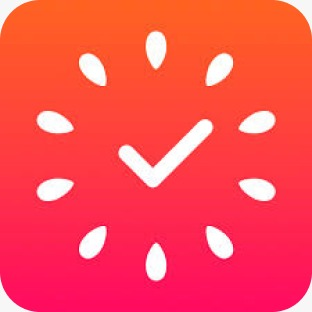

 Focus to Do Aplicativo que une o método Pomodoro com lista de tarefas a serem cumpridas Link para download
Brain.fm Aplicativo que oferece trilhas sonoras que estimulam o foco por longos períodos de tempo Link para download
Meditopia Aplicativo que ajuda a diminuir o stress e a ansiedade por meio de meditações Link para download